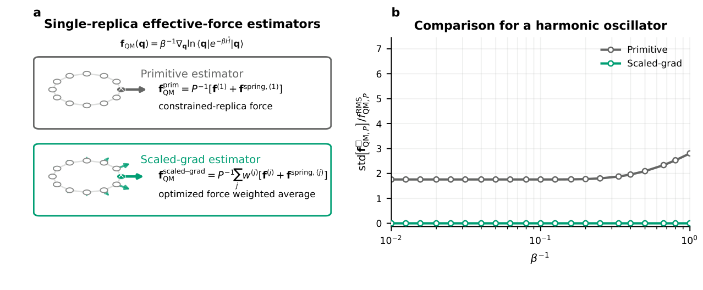
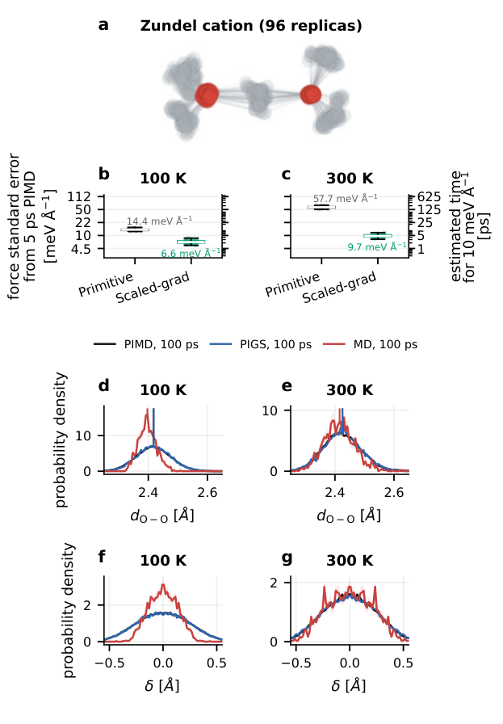
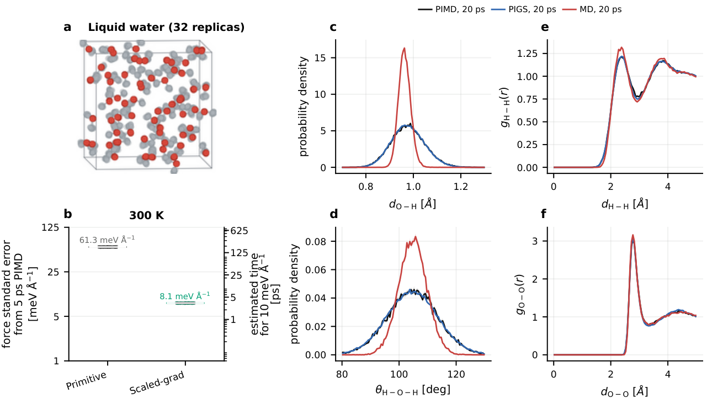

核量子平均力：先把训练标签的噪声降下来，再用普通分子动力学采样量子结构
论文原文 ↗原文：Venkat Kapil，Low-variance estimators for nuclear quantum mean forces，arXiv:2610.32652，2026。官方页面 · · 代码、数据和模型
轻原子的位置分布会受到零点运动和量子离域影响。例如，氢键里的质子通常比经典粒子更分散，这会改变键长、键角和质子转移坐标的分布。路径积分分子动力学（PIMD）能计算这些平衡量子统计，但需要把一个体系复制成许多相互连接的副本，显著增加模拟成本。
一条已有的加速路线是：把这些副本的影响吸收进一个有效势，再用一套完整的原子坐标进行普通 MD。困难随之转移到了训练阶段——有效势需要的平均力标签噪声很大，必须进行很长的 PIMD 才能算准。本文针对这个瓶颈，利用各副本中已经计算出来的力构造低方差估计量，使相同目标精度所需的标签采样时间大幅下降，并得到能稳定运行的机器学习有效势。
为什么一套坐标能携带量子统计
PIMD 将体系映射成 P 套原子坐标组成的环状聚合物。每个副本内部按照原来的物理势相互作用，相邻副本之间由虚拟弹簧连接；增加副本数，可以让计算逐渐收敛到目标量子平衡统计。
这里需要区分两个坐标：所有副本的平均位置称为质心；任意一个副本则仍有一套完整体系的坐标。本文选择保留一个副本，把其余副本积分掉。保留下来的位置分布，就是作者希望用便宜模拟复现的量子位置分布。
设这套坐标为 q，它的量子平衡概率为 pQM(q)，便可定义一个温度相关的有效势：
UQM(q; T) = −kBT ln pQM(q) + 常数。
在这个有效势上做经典正则系综采样，位置出现的概率就与目标量子分布对应。有效势称为平均力势：当其余副本的各种可能位置都被平均后，它的负梯度给出保留坐标所受的平均力。PIGS，即路径积分粗粒化模拟，就是用机器学习势表示这类有效势，再复用它开展采样。
本文训练的对象因此是一张带有指定温度核量子统计的有效势能面。输入依然是原子坐标，输出仍可以是一个标量势能，后续也能使用普通 MD 程序。关键变化在于监督标签来自量子平均力。
标签为什么难算：固定一个副本后，弹簧力非常吵
要给某个构型 q 计算标签，作者先把第一套副本固定在 q，再让其余副本进行受约束 PIMD。最直接的估计办法，是对固定副本上的物理力与弹簧力之和求平均，并除以副本数 P。
这个平均值是正确的，但瞬时弹簧力波动很大。尤其在同时具有高频和低频模式的分子里，很多并不需要很强量子处理的自由度，也会给标签带来相当大的统计噪声。结果是：网络尚未开始训练，获得一条足够精确的监督标签就已经很昂贵。

图1｜a 中叉号标记固定的副本；原始估计只使用该副本的总力，新估计组合多个副本的力。b 中一维谐振子的绿色曲线为零，表明选取解析最优权重后，采样波动可以完全抵消。
降噪的核心：加入平均值为零、却能抵消波动的力
作者利用了一个简单但很有效的性质：**在第一副本固定的平衡系综里，其余未固定副本的平均总力均为零。**这些总力并非每一时刻都为零，而是在足够长的平均后归零。
于是，可以在原始估计量中加入它们的加权组合。加入的是均值为零的项，因此不改变目标平均力；但只要这些项与原始噪声相关，就能抵消其中一部分波动。这对应统计学里的控制变量思想。
具体地，第一副本的权重固定为 1，其余 P−1 个权重通过最小化平均力估计的方差确定。新估计仍包含各副本的物理力与弹簧力，最后统一除以 P。作者称其为 scaled gradient estimator，缩放梯度估计量。
一维谐振子提供了直观的解析例子：力与位移之间是线性关系，作者可以写出最优权重，使不同副本带来的瞬时波动恰好相消。此时每个样本都给出相同的目标平均力，方差为零。
对于真实体系，权重由采样得到的力相关性确定。作者把受约束轨迹切成多个时间块，用一部分时间块计算副本总力的协方差，拟合权重；加入 L2 正则化，避免有限样本让权重变得不稳定。另一部分时间块负责评价降噪效果，再交换两部分的角色。这样，某个时间块的平均力由其他时间块确定的权重来估计。
从低噪声标签到 MACE：完整计算链怎样接起来
以一个待标注的水构型为例，完整流程是：
- **固定第一副本的全部原子坐标。**其余副本在同一温度进行 PIMD，采样各自的物理力和弹簧力。
- **由力的相关性确定权重。**在分块轨迹上优化、选择正则化强度，再把权重应用到留出的时间块，得到这个水构型的低噪声量子平均力。
- **对多个构型重复。**每个构型都获得一套原子力标签，组成坐标—平均力训练集。
- **以力损失训练保守的 MACE 有效势。**网络输出 Uθ(q)，其负梯度 −∇Uθ(q) 拟合平均力；作者直接学习有效势，而非先预测原物理势、再学习差值。
- **使用有效势运行普通 MD。**最后统计 O–H 键长、H–O–H 键角、分子间径向分布等位置相关量，并与 PIMD 比较。
采样标签的受约束 PIMD 较贵，但所得有效势可以在之后的生产模拟中反复使用。本文减少的正是这项前期标签成本，同时改善训练后势模型的稳定性。
Zundel 阳离子：标签更精确，质子离域仍能保留
第一个测试体系是 Zundel 阳离子 H₅O₂⁺：两个水单元之间共享一个质子，是观察核量子离域的典型体系。作者在 100 K 和 300 K 各标注 64 个构型，分别使用 48 个训练、8 个验证和 8 个测试构型。
每个构型经过 2 ps 平衡，再用 5 ps 生产轨迹计算标签。相同采样长度下，平均力标准误差的中位数发生以下变化：
| 条件 | 原始估计 | 缩放梯度估计 |
|---|---|---|
| 100 K | 14.4 meV/Å | 6.6 meV/Å |
| 300 K | 57.7 meV/Å | 9.7 meV/Å |
若以 10 meV/Å 为目标，并按统计误差随采样时间的平方根下降来估算，所需采样时间在 100 K 从 10.3 ps 降至 2.2 ps，约节省 4.7 倍；在 300 K 从 166.3 ps 降至 4.7 ps，约节省 35 倍。这些倍数描述的是达到目标标签误差所需的受约束采样时间。

图2｜b–c 比较两种标签估计的误差；d–g 比较 O–O 距离和共享质子转移坐标的分布。黑色为 PIMD，蓝色为有效势上的 PIGS，红色为原物理势上的经典 MD。
在 100 K，PIMD 给出的质子位置分布明显比经典 MD 更宽，O–O 距离也发生变化。低噪声标签训练出的有效势复现了这些量子结构特征；在 300 K，量子与经典分布的差异变小，PIGS 仍与 PIMD 保持较好一致。
这将降噪与最终用途连接起来：作者降低了训练标签的统计误差，训练得到的势也保留了共享质子的量子位置统计。
液态水：在多分子体系里降低标签成本并稳定运行
第二个体系是 300 K 的液态水，物理相互作用使用 q-TIP4P/F 势。体系包含 64 个水分子，PIMD 使用 32 个副本；训练数据共 128 个构型，其中 112 个用于训练。
在同样 5 ps 标签生产轨迹下，平均力标准误差的中位数从 61.3 降到 8.1 meV/Å。达到 10 meV/Å 的估算采样时间从 188.1 ps 降至 3.3 ps，约降低 57.5 倍。

图3｜b 展示平均力标签降噪；c–d 展示量子效应引起的分子内键长、键角展宽；e–f 比较分子间 H–H 和 O–O 径向分布。
有效势上的 MD 复现了 PIMD 中明显展宽的 O–H 键长与 H–O–H 键角分布，H–H 径向分布也更接近 PIMD；O–O 分布仍有与经典 MD 相当的偏差。作者另外得到了一条稳定的 100 ps 轨迹，改善了此前同类起点粗粒化水模型中出现的稳定性问题。
方法价值：把“量子势怎么学”拆成标签与采样两个阶段
这篇工作的增量发生在训练数据生成端。它使用受约束 PIMD 中已经存在的力信息，通过一个不改变平均值的组合降低噪声；因此，可以为同样的平均力标签少采样，也可以用同样的采样获得更精确的标签。
后续机器学习部分沿用常规势模型训练：坐标作为输入，以能量梯度拟合力，生产阶段运行 MD。由此，昂贵的量子统计计算被集中到可复用的数据集和有效势训练中，长期模拟则使用一套原子坐标。作者希望沿此路线，把核量子平衡结构的研究推进到更大的体系和更长的采样尺度。
原始摘要完整中文翻译
通过在单个路径积分副本所学习到的平均力势上开展分子动力学，可以严格描述核量子效应对位置相关算符统计性质的影响。然而，将该副本固定后，通过路径积分分子动力学得到的原始平均力估计具有很大的噪声。我们推导出一种“缩放梯度”估计量，它对于一维谐振子的方差为零。在分子基准体系——100 K 和 300 K 的 Zundel 阳离子，以及 300 K 的体相水——中，我们观察到采样时间减少了接近 5 至 50 倍。所得到的势可以像标准机器学习原子间势一样，使用这些力进行训练，并得到稳定的生产模拟；从这些模拟中，可以通过经典系综平均获得位置相关观测量的量子期望值。